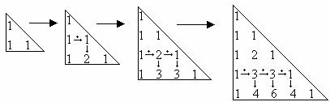

Restantes:
10181
Usuário:
Notas:
Q1: 100
Q2: 100
Q3: 100
Q4: 100
Q5: 100
Q6: 100
Q7: 100
Q8: 100
Q9: 72.9
Q10: 100
Q11: 81
Q12: 100
Q13: 90
Q14: 100
Q15: 100
Q16: 100
Q17: 100
Q18: 49.2
Q19: 75.5
Q20: 81
Q21: 75.8
Q22: 58.9
Q23: 100
IAlg - Exercícios de Vetores
Prova Aberta Até: 01/02/2017 23:00:00
Número Máximo de Tentativas: 6
Atenuação da Nota por Tentativa (multiplicativa): 0.9
Nota Máxima por Tentativa:
- 100
- 90
- 81
- 72.9
- 65.61
- 59.049
Descrição:
QUESTÕES
Questão 1: Vetores - Soma das subtrações
Faça um programa que leia dois vetores (A e B) com cinco posições para números inteiros. O programa deve, então, subtrair o primeiro elemento de A do último de B, o segundo de A do penúltimo de B, e assim sucessivamente. O programa deve, por fim, calcular a soma dos resultados de todas as subtrações e exibi-la no dipositivo de saída padrão. Assuma que todos os dados de entrada do vetor A serão fornecidos em uma mesma linha e todos os dados do vetor B serão fornecidos em uma segunda linha.
Obs.: Vetores em Python são implementados como listas cujos elementos são todos homogêneos.
Entrada:
- Cinco números inteiros do vetor A.
- Cinco números inteiros do vetor B.
Saída:
- Soma dos resultados das subtrações dos elementos de A (a partir do começo) dos elementos de B (a partir do final).
Exemplo de entrada:
5 6 7 8 9 5 4 3 2 1
Exemplo de saída:
20
Peso: 1
Última tentativa: 09/11/2016 14:06:28
Tentativas: 1 de 6
Nota (0 a 100): 100
Status ou Justificativa de Nota: Nenhum erro encontrado.
Tentativas de Resposta:
Questão 2: Vetores - Números e Divisores
Faça um programa que receba 15 números inteiros. Os primeiros dez números devem ser armazenados em um vetor e os cinco últimos em outro. Assuma que todos os 10 primeiros números serão fornecidos em uma única linha e todos os últimos 5 números serão fornecidos em uma segunda linha. O programa deverá mostrar para cada número do primeiro vetor quantos números do segundo vetor são seus divisores.
Obs.: Vetores em Python são implementados como listas cujos elementos são todos homogêneos.
Entrada:
- Dez números inteiros armazenados em um vetor v1.
- Cinco números inteiros armazenados em um vetor v2.
Saída:
- Dez linhas, cada uma começando com um dos números do vetor v1 seguido da quantidade de divisores que o número possui em v2.
Exemplo de entrada:
20 24 25 31 34 38 40 52 1 3 2 15 3 4 7
Exemplo de saída:
20 2 24 3 25 0 31 0 34 1 38 1 40 2 52 2 1 0 3 1
Peso: 1
Última tentativa: 09/11/2016 16:36:14
Tentativas: 1 de 6
Nota (0 a 100): 100
Status ou Justificativa de Nota: Nenhum erro encontrado.
Tentativas de Resposta:
Questão 3: Vetores - Índices para multiplicação
Faça um programa que receba sete valores inteiros e armazene-os em um vetor. Todos os sete valores serão fornecidos em uma única linha. Em seguida, o programa receberá, em uma segunda linha, uma sequência indefinida de números inteiros (entre 0 e 6) e, por fim nesta mesma segunda linha, um número negativo indicando que a sequência terminou (os números da sequência indicam as posições do vetor). O programa deverá calcular a multiplicação dos números do vetor indicados pelas posições passadas na sequência de números.
Por exemplo: se um vetor v tiver os números 10, 20, 30, 40, 50, 60 e 70 e a sequência de números for 0 6 3 -1, o resultado do cálculo será: v[0] * v[6] * v[3] = 10 * 70 * 40 = 28000.
Obs.: Vetores em Python são implementados como listas cujos elementos são todos homogêneos.
Entrada:
- Sete números inteiros a serem colocados em um vetor.
- Sequência indeterminada de números inteiros de 0 a 6 (terminada por um número negativo).
Saída:
- Multiplicação dos números do vetor indicados pelas posições da sequência.
Exemplo de entrada:
2 4 3 2 5 7 8 0 1 1 1 5 -2
Exemplo de saída:
896
Peso: 1
Última tentativa: 09/11/2016 18:35:51
Tentativas: 1 de 6
Nota (0 a 100): 100
Status ou Justificativa de Nota: Nenhum erro encontrado.
Tentativas de Resposta:
Questão 4: Vetores - Separar negativos e positivos
Faça um programa que preencha um vetor com oito números inteiros, calcule e mostre dois vetores resultantes. O primeiro vetor resultante deve conter os números positivos; o segundo deve conter os números negativos. Cada vetor resultante vai ter, no máximo, oito posições, que poderão não ser completamente utilizadas. Assuma que todos os dados de entrada serão fornecidos em uma única linha. Assuma também que sempre haverá no mínimo um número positivo e um número negativo nos dados de entrada.
Obs.: Vetores em Python são implementados como listas cujos elementos são todos homogêneos.
Entradas:
- Oito numeros inteiros.
Saídas:
- Vetor resultante com os números positivos. - Vetor resultante com os números negativos.
Entradas:
1 2 3 4 5 -5 -4 -1
Saídas:
1 2 3 4 5 -5 -4 -1
Peso: 1
Última tentativa: 09/11/2016 19:37:06
Tentativas: 1 de 6
Nota (0 a 100): 100
Status ou Justificativa de Nota: Nenhum erro encontrado.
Tentativas de Resposta:
Questão 5: Vetores - Controle de Estoque
Faça um programa para controlar o estoque de mercadorias de uma empresa. Inicialmente, o programa deverá preencher dois vetores com dez posições cada, onde o primeiro corresponde aos códigos dos produtos e o segundo aos totais desses produtos em estoque. Logo após, o programa deverá ler um conjunto indeterminado de dados contendo o código de um cliente e o código do produto que ele deseja comprar, juntamente com a quantidade. Código do cliente igual a zero indica o fim do programa. O programa deverá verificar:
- Se o código do produto solicitado existe. Se existir, tentar atender ao pedido; caso contrário, contabilizar em um total de pedidos não atendidos por produtos inexistentes;
- Cada pedido feito por um cliente só pode ser atendido integralmente. Se for possível deve ser dada baixa no estoque. Caso contrário, deve-se contabilizar em um total de pedidos não atendidos.
No final o programa deve escrever os códigos dos produtos com seus respectivos estoques já atualizados, a quantidade de pedidos não atendidos por produtos inexistentes, e a quantidade de pedidos não atendidos integralmente.
Obs.: Vetores em Python são implementados como listas cujos elementos são todos homogêneos.
Entrada:
- Dez códigos (inteiros) de produtos. Assuma que todos os dez códigos serão fornecidos em uma mesma linha.
- Dez quantidades (inteiras) dos produtos. Assuma que todas as quantidades serão fornecidas em uma segunda linha.
- Sequência de pedidos contendo o código do cliente, o código do produto e a quantidade. Obs: até que seja lido o código de cliente zero. Assuma que sequência será fornecida de modo que para uma dada tentativa de compra as três informações da tentativa (código do cliente, código do produto e quantidade), serão descritas em uma mesma linha.
Saída:
- Estoque atualizado dos produtos (em cada linha o código do produto e a quantidade disponível).
- Total de pedidos de produtos inexistentes.
- Total de pedidos não atendidos porque não puderam ser atendidos integralmente.
Exemplo de entrada:
10 20 30 40 50 60 70 80 90 100 5 10 10 20 20 10 10 5 5 10 1 20 10 2 40 10 3 60 12 4 21 10 5 20 10 0 0 0
Exemplo de saída:
10 5 20 0 30 10 40 10 50 20 60 10 70 10 80 5 90 5 100 10 1 2
Peso: 1
Última tentativa: 15/11/2016 11:13:13
Tentativas: 1 de 6
Nota (0 a 100): 100
Status ou Justificativa de Nota: Nenhum erro encontrado.
Tentativas de Resposta:
Questão 6: Vetores - Temperaturas mensais médias
Faça um programa que receba a temperatura média de cada mês do ano e armazene-as em um vetor. O programa deverá então descobrir e exibir o mês mais quente e o mais frio do ano. Assuma que todos os dados de entrada serão fornecidos em uma mesma linha. Assuma também que não haverá empates em relação a quais são os meses mais frios e mais quentes do ano.
Obs.: Vetores em Python são implementados como listas cujos elementos são todos homogêneos.
Entrada:
- Doze números decimais representando as temperaturas médias de cada mês do ano. O primeiro se refere a janeiro, o segundo a fevereiro, e assim por diante.
Saída:
- O nome do mês mais quente do ano. A grafia do nome do mês deve utilizar apenas letras minúsculas e sem acentuação.
- O nome do mês mais frio do ano. A grafia do nome do mês deve utilizar apenas letras minúsculas e sem acentuação.
Exemplo de entrada:
31.5 30.3 30.4 27.3 22.1 19.4 15.3 14.0 19.9 22.5 29.3 30.7
Exemplo de saída:
janeiro agosto
Peso: 1
Última tentativa: 10/11/2016 17:32:07
Tentativas: 1 de 6
Nota (0 a 100): 100
Status ou Justificativa de Nota: Nenhum erro encontrado.
Tentativas de Resposta:
Questão 7: Vetores - Inserção em um vetor
Faça um programa que insere elementos em um vetor de inteiros deslocando os elementos existentes. O vetor terá capacidade fixa para 10 elementos e iniciará com todos os valores iguais a zero. O programa deverá a princípio ler k valores a serem colocados no vetor (sendo k <= 10). Ele deverá ler, em seguida, o valor de um novo elemento e a posição p na qual ele deve ser inserido. O programa deverá então inserir o novo elemento na posição posição p deslocando os elementos existentes (descartando o último elemento que ficar sobrando). Por fim, o programa deve escrever os elementos do vetor.
Obs: para soluções em Python utilize as listas padrões da linguagem ao invés de vetores. Além disso, as alterações devem ser feitas usando apenas os índices dos elementos (não devem ser utilizadas funções de inserção em listas).
Entradas:
- Valor de k (quantidade de elementos lidos inicialmente).
- Linha contendo os k elementos iniciais do vetor.
- Novo elemento a ser inserido no vetor.
- Valor de p (posição na qual o novo elemento será inserido no vetor).
Saídas:
- Os 10 elementos do vetor após a inserção.
Entradas:
5 1 2 3 4 5 9 2
Saídas:
1 2 9 3 4 5 0 0 0 0
Peso: 1
Última tentativa: 10/11/2016 20:42:36
Tentativas: 1 de 6
Nota (0 a 100): 100
Status ou Justificativa de Nota: Nenhum erro encontrado.
Tentativas de Resposta:
Questão 8: Vetores - Remover um elemento do vetor
Faça um programa que leia um número inteiro positivo que indica a quantidade de elementos de um dado vetor de números inteiros. Em seguida seu programa deverá ler valores para todas as posições do vetor. Após a leitura dos valores dos elementos do vetor, seu programa deverá ler do dispositivo de entrada padrão um outro número inteiro que deverá ser removido do vetor, caso o mesmo se encontre presente. O primeiro valor encontrado no vetor que for igual ao elemento lido é o que deve ser removido. Após a remoção do elemento, o programa deve escrever no dispositivo de saída padrão todos os elementos do vetor. Caso o elemento a ser removido não pertença ao vetor, o programa deverá exibir a mensagem ELEMENTO NAO ENCONTRADO (letras maiúsculas e sem acentuação).
Ao remover o elemento do vetor, não é perdido que haja um espaço vazio no meio do vetor. Ou seja, ao final do processo de remoção, a posição livre do vetor deverá ser obrigatoriamente a última posição do vetor.
Não é permitido o uso de um segundo vetor auxiliar nesta questão.
Entradas:
- A quantidade de elementos do vetor.
- Os valores do vetor (números inteiros).
- O valor a ser removido do vetor.
Saídas:
- Sequência de N-1 números inteiros, caso o elemento X tenha sido removido do vetor OU mensagem ELEMENTO NAO ENCONTRADO, caso o elemento X não seja um dos elementos do vetor.
Exemplo de entrada:
5 13 49 23 6 21 13
Exemplo de saída:
49 23 6 21
Exemplo de entrada:
5 13 49 23 6 21 31
Exemplo de saída:
ELEMENTO NAO ENCONTRADO
Peso: 1
Última tentativa: 14/11/2016 09:40:05
Tentativas: 1 de 6
Nota (0 a 100): 100
Status ou Justificativa de Nota: Nenhum erro encontrado.
Tentativas de Resposta:
Questão 9: Vetores - Conta negativos e soma positivos
Faça um programa que preencha um vetor com dez números reais, calcule e mostre a quantidade de números negativos e a soma dos números positivos desse vetor.
Obs: para soluções em Python utilize as listas padrões da linguagem ao invés de vetores.
Entrada:
- Dez números reais (a serem guardados em um vetor).
Saída:
- Quantidade de números negativos no vetor.
- Soma dos números positivos do vetor.
Exemplo de entrada:
9.4 2.5 1 5.9 1.6 -1 -6.7 -8.1 -2.3 -9.5
Exemplo de saída:
5 20.4
Peso: 1
Última tentativa: 10/11/2016 21:03:19
Tentativas: 4 de 6
Nota (0 a 100): 72.9
Status ou Justificativa de Nota: Nenhum erro encontrado.
Tentativas de Resposta:
Questão 10: Vetor – Múltiplos de 2 e 3
Faça um programa que preencha um vetor com sete números inteiros, calcule e mostre: os números múltiplos de 2; os números múltiplos de 3; e os números múltiplos de 2 e 3. Os números múltiplos de 2 e 3 podem aparecer nos casos isolados. Caso não exista nenhum número o programa deve retornar 0 na respectiva saída.
Obs: para soluções em Python utilize as listas padrões da linguagem ao invés de vetores.
Entradas:
- Sequência de sete números inteiros
Saídas:
- Números que são múltiplos de 2;
- Números que são múltiplos de 3;
- Números que são múltiplos de 2 e 3 simultaneamente.
Exemplo de entrada:
4 6 3 9 7 10 13
Exemplo de saída:
4 6 10 6 3 9 6
Peso: 1
Última tentativa: 10/11/2016 23:51:33
Tentativas: 1 de 6
Nota (0 a 100): 100
Status ou Justificativa de Nota: Nenhum erro encontrado.
Tentativas de Resposta:
Questão 11: Vetores - Caracteres intermediários
Faça um programa com um vetor de tamanho n que irá receber um conjunto de caracteres. O tamanho n deverá ser lido antes dos caracteres. O programa deve ler mais 2 caracteres que servirão como marcadores. O programa, então, deverá escrever os caracteres do conjunto que estão entre os dois caracteres digitados como marcadores.
Os marcadores não precisam estar em ordem, ou seja, o primeiro marcador não necessariamente precisa vir antes do segundo.
Obs: para soluções em Python utilize as listas padrões da linguagem ao invés de vetores.
Entrada:
- Tamanho n do vetor.
- Linha contendo os caracteres do vetor (separados entre si por espaço).
- Linha contendo os dois caracteres delimitadores (separados entre si por espaço).
Saídas:
- Caracteres do vetor entre os delimitadores.
Exemplo de entrada:
6 A B C D E F C F
Exemplo de saída:
D E
Peso: 1
Última tentativa: 11/11/2016 12:04:55
Tentativas: 3 de 6
Nota (0 a 100): 81
Status ou Justificativa de Nota: Nenhum erro encontrado.
Tentativas de Resposta:
Questão 12: Vetores - Palíndromo
Um palíndromo é um texto que pode ser lido igualmente da esquerda para a direita e da direita para a esquerda. Por exemplo, sem considerar sinais gráficos, acentos e letras maiúsculas e minúsculas: "socorram me subi no onibus em marrocos". Outros exemplos de palíndromos ocorrem com números (por exemplo: 12321) ou com datas (por exemplo: 20-02-2002).
Obs: para soluções em Python utilize as listas padrões da linguagem ao invés de vetores.
Faça um programa que leia vários números inteiros, armazenando-os num vetor. Depois determine se esse vetor é um palíndromo ou não. Em caso positivo, escreva 1, em caso negativo, escreva 0.
Entradas:
- A quantidade de valores que deve ser lida para criar o vetor.
- Linha contendo os valores do vetor (números inteiros).
Saídas:
- A indicação se o vetor é palíndromo ou não.
Exemplo de entrada:
5 1 2 3 2 1
Exemplo de saída:
1
Peso: 1
Última tentativa: 14/11/2016 10:14:47
Tentativas: 1 de 6
Nota (0 a 100): 100
Status ou Justificativa de Nota: Nenhum erro encontrado.
Tentativas de Resposta:
Questão 13: Vetores - Maior, Menor, Intermediário.
Faça um algoritmo que receba um vetor de N posições e o preencha. Após o preenchimento, busque no vetor, o maior, o menor número e o elemento central. Imprima-os nessa ordem e suas respectivas posições.
Obs1: Se o vetor não possuir elemento central imprima no lugar do elemento -1 e sua posição -1.
Obs2: Vetores em Python são implementados como listas cujos elementos são todos homogêneos.
Entradas:
int n- Tamanho do vetor.float vet[n]- Vetor que será preenchido.
Saídas:
- Maior elemento do vetor (
float). - Menor elemento do vetor (
float). - Elemento central do vetor (
float). - Posição no vetor do maior elemento (
int). - Posição no vetor do menor elemento (
int). - Posição do elemento central do vetor (
int).
Exemplos de Entradas e Saídas:
Entradas:
5
3
1
6
9
7
Saídas:
9
1
6
3
1
2
Peso: 1
Última tentativa: 14/11/2016 11:32:14
Tentativas: 2 de 6
Nota (0 a 100): 90
Status ou Justificativa de Nota: Nenhum erro encontrado.
Tentativas de Resposta:
Questão 14: Vetores - Interseção
Faça um programa que lê dois vetores de números reais, preencha-os e escreva a interseção entre eles. Caso não haja elementos na interseção, escreva -1.
Entradas (em ordem):
- A quantidade de elementos do primeiro vetor,
- A quantidade de elementos do segundo vetor,
- Os elementos do primeiro vetor, na mesma linha,
- Os elementos do segundo vetor, na mesma linha.
Obs.: Vetores em Python são implementados como listas cujos elementos são todos homogêneos.
Saídas:
- Os elementos que estão nos dois vetores, na ordem em que eles aparecem no primeiro vetor, um em cada linha.
Exemplo de entrada: 5 3 4 2 9 8 6 2 5 0 Exemplo de saída: 2
Peso: 1
Última tentativa: 14/11/2016 12:29:11
Tentativas: 1 de 6
Nota (0 a 100): 100
Status ou Justificativa de Nota: Nenhum erro encontrado.
Tentativas de Resposta:
Questão 15: Vetores - Matrícula Repetida
Uma escola deseja saber se existem alunos cursando, simultaneamente, as disciplinas de Lógica e AED1.
Coloque os números das matrículas dos alunos que cursam Lógica em um vetor de quinze alunos. Coloque os números das matrículas dos alunos que cursam AED1 em outro vetor, de dez alunos. Mostre o número das matrículas que aparecem nos dois vetores.
Obs.: Vetores em Python são implementados como listas cujos elementos são todos homogêneos.
Entrada:
Cada linha da entrada deve conter um número de matrícula. Serão
necessários 25 números: 15 para o primeiro vetor e 10 para o segundo
vetor, nesta ordem. Cada número de matrícula é um valor inteiro.
Exemplo:
20122234
20122002
20122345
20122022
20122035
20122070
20122456
20122123
20122321
20122789
20122987
20122923
20122124
20122001
20122567
20122678
20122234
20122453
20122345
20122456
20122098
20122890
20122123
20122001
20122789
Saída:
Cada linha da saída deve conter um número de matrícula que esteja
simultaneamente nos dois vetores, mantendo a ordem em que eles aparecem
no vetor da disciplina de Lógica.
Exemplo:
20122234
20122345
20122456
20122123
20122789
20122001
Peso: 1
Última tentativa: 15/11/2016 11:41:10
Tentativas: 1 de 6
Nota (0 a 100): 100
Status ou Justificativa de Nota: Nenhum erro encontrado.
Tentativas de Resposta:
Questão 16: Vetores - String - Contar vogais
Faça um programa que dada uma string, somente com letras minúsculas, sem espaços, conta quantas vogais apareceram.
Exemplo de entrada: paralelogramo Exemplo de saída: 6
Peso: 1
Última tentativa: 16/11/2016 10:25:56
Tentativas: 1 de 6
Nota (0 a 100): 100
Status ou Justificativa de Nota: Nenhum erro encontrado.
Tentativas de Resposta:
Questão 17: Vetores - Coletando consoantes
Faça um programa que lê 10 caracteres (todos serão letras minúsculas e sem acentuação) e os guarda num vetor de caracteres. Em seguida, coloque todas as consoantes num outro vetor, mantendo a ordem que existia entre elas. Escreva as consoantes.
Entradas:
- 10 caracteres (podem estar juntos ou separados - use o operador de leitura para não precisar preocupar com isso)
Saídas:
- Todas as consoantes do vetor preenchido com os caracteres da entrada, sem qualquer separação entre as letras.
Exemplo de entrada: brasileiro Exemplo de saída: brslr
Exemplo de entrada: c a p a c i d a d e Exemplo de saída: cpcdd
Peso: 1
Última tentativa: 16/11/2016 10:40:45
Tentativas: 1 de 6
Nota (0 a 100): 100
Status ou Justificativa de Nota: Nenhum erro encontrado.
Tentativas de Resposta:
Questão 18: Vetores - Moda (2)
Em estatística, moda é o valor que ocorre com maior
frequência num conjunto de dados, não sendo necessariamente única. Por
exemplo a série {1, 3, 5, 5, 6, 6} apresenta 2 modas: 5 e 6.
Faça um programa que preencha um vetor de tamanho N, a ser definido, com
inteiros digitados pelo usuário. O programa deverá retornar quantas e
quais as modas do vetor.
Exemplos de Entrada e Saída:
Entrada:
7
2 4 1 10 4 2 1
Saída:
3
2 4 1
Peso: 1
Última tentativa: 25/11/2016 15:54:25
Tentativas: 5 de 6
Nota (0 a 100): 49.2
Status ou Justificativa de Nota:
Tentativas de Resposta:
Questão 19: Vetores - Apagando e Ganhando
O SBT comprou os direitos sobre um programa de auditório muito popular na Finlândia e resolveu chamá-lo de Apagando e Ganhando. Neste programa, Silvio Santos apresenta um número ao participante e diz para ele apagar uma certa quantidade de dígitos, formando um novo número com os dígitos que sobraram, na sequência em que estavam. O número formado é então dado em dinheiro para o participante.
Seu amigo vai participar do programa, mas teme não conseguir pensar direito na hora do show. Então ele pediu que você faça um programa que leia:
- um número inteiro e
- uma quantidade de dígitos a serem removidos,
e depois escreve qual o maior número possível de ser formado sob essas condições.
Exemplo de entrada:
324911285 5
Exemplo de saída:
9285
Peso: 1
Última tentativa: 26/11/2016 01:15:09
Tentativas: 2 de 6
Nota (0 a 100): 75.5
Status ou Justificativa de Nota: O programa não resolve todas as instâncias do problema.
Tentativas de Resposta:
Questão 20: Vetores - Números Felizes
Um número inteiro positivo é um número feliz se a soma dos quadrados de seus dígitos é 1 ou um outro número feliz.
Por exemplo, 7 é um número feliz porque:
- 7² = 49
- 4² + 9² = 97
- 9² + 7² = 130
- 1² + 3² + 0 = 10
- 1² + 0² = 1
Números que não são felizes passam a eternidade procurando a felicidade mas nunca encontram. É preciso ter cuidado para decidir que um número não é feliz antes do final dos tempos. Por exemplo, o número 4 não é feliz porque:
- 4² = 16
- 1² + 6² = 37
- 3² + 7² = 58
- 5² + 8² = 89
- 8² + 9² = 145
- 1² + 4² + 5² = 42
- 4² + 2² = 20
- 2² + 0² = 4
Se continuássemos calculando as somas dos quadrados dos dígitos, continuaríamos infinitamente, o que claramente não deve acontecer.
Faça um programa que dado um número inteiro positivo, diga se ele é feliz ou não. O programa deve escrever também todas as somas de quadrados de dígitos que foram encontrados.
Entradas:
- Um número inteiro positivo.
Saídas:
- Todos os números intermediários (no caso de um número feliz, a sequência vai até o 1; em caso contrário vai até o número que permitiu a classificação) e
- A palavra
simounao(letras minúsculas, sem acentos) indicando se o número é feliz.
Exemplo de entrada:
4
Exemplo de saída:
16 37 58 89 145 42 20 4 nao
Peso: 1
Última tentativa: 25/11/2016 15:43:05
Tentativas: 3 de 6
Nota (0 a 100): 81
Status ou Justificativa de Nota: Nenhum erro encontrado.
Tentativas de Resposta:
Questão 21: Vetores - Inserindo elementos em um vetor.
Faça um programa que receba dois vetores, sendo que o segundo deverá ter o dobro do tamanho do primeiro.O usuário deverá preencher completamente o primeiro vetor, enquanto o segundo vetor terá apenas a metade de seu tamanho ocupado.
O programa deverá inserir os elementos do primeiro vetor no segundos vetor, em um determinada posição a ser informada pelo usuário.
OBS.:Todos os elementos do primeiro vetor devem ser inseridos na mesma posição informada, sendo em que em cada passo da repetição, um novo número,elemento do primeiro vetor, ocupará posição.
OBS2.:Considere que só poderá ter entradas de posição já ocupadas do segundo vetor.
Entradas:
- Tamanho do primeiro vetor (int).
- Elementos do primeiro vetor (int).
- Elementos do segundo vetor (int)
- Posição a se inserir (int).
Saídas:
- Cada passo da inserção dos elementos.
Exemplo de Entrada:
5 1 2 3 4 5 10 35 11 2 1 1
Exemplo de Saída:
10 1 35 11 2 1 10 2 1 35 11 2 1 10 3 2 1 35 11 2 1 10 4 3 2 1 35 11 2 1 10 5 4 3 2 1 35 11 2 1
Peso: 1
Última tentativa: 18/11/2016 17:44:07
Tentativas: 1 de 6
Nota (0 a 100): 75.8
Status ou Justificativa de Nota: O programa não resolve todas as instâncias do problema.
Tentativas de Resposta:
Questão 22: Vetores - Busca de sequências.
Faça um programa que receba dois vetores de tamanho x e y, a serem fornecidos pelo usúario. O programa deverá retornar todas as sequências contidas no primeiro vetor, que também esteja presente no segundo vetor, caso não contenha nenhum correspondente, exibir na tela: ERRO.
OBS.:Considere que não haverá sequências repetidas.
OBS2.:Considere como sequência, quaisquer números no formato: n, n+1, (n+1)+1...
Entradas:
- Tamanho do primeiro vetor (int).
- Tamanho do segundo vetor (int).
- Elementos do primeiro vetor (int).
- Elementos do segundo vetor (int).
Saídas:
- Sequências que estajam contidas em ambos os vetores.
Exemplo de Entrada 1:
11 6 3 4 5 6 5 1 2 7 8 1 3 6 1 2 3 4 5
Exemplo de Saída 1:
3 4 5 1 2
Exemplo de Entrada 2:
4 5 5 6 7 8 6 1 2 3 4
Exemplo de Saída 2:
ERRO
Peso: 1
Última tentativa: 21/11/2016 21:20:02
Tentativas: 4 de 6
Nota (0 a 100): 58.9
Status ou Justificativa de Nota: A quantidade de dados escritos pelo programa é diferente da quantidade de dados esperados. O programa não resolve todas as instâncias do problema.
Tentativas de Resposta:
Questão 23: Vetores - Triângulo de Pascal.
Faça um algoritmo que, dado n, imprime as n primeiras linhas do triângulo de Pascal.
Sendo que o triângulo de Pascal é montado da seguinte forma:
Entradas:
- n linhas do triângulo de Pascal (int).
Saídas:
- Triângulo de Pascal.
Exemplo de Entrada:
9
Exemplo de Saída:
1 1 1 1 2 1 1 3 3 1 1 4 6 4 1 1 5 10 10 5 1 1 6 15 20 15 6 1 1 7 21 35 35 21 7 1 1 8 28 56 70 56 28 8 1
Peso: 1
Última tentativa: 24/11/2016 17:31:05
Tentativas: 1 de 6
Nota (0 a 100): 100
Status ou Justificativa de Nota: Nenhum erro encontrado.
Tentativas de Resposta: